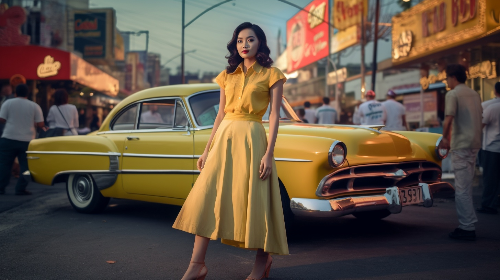

17mm vs 200mm
model posing at surabaya city roadside, photography, using Tokina AF 10-17mm f/3.5-4.5 --ar 16:9 --no camera lens

model posing at surabaya city roadside, photography, using Canon EF 200mm f/2.8L II USM --ar 16:9 --no camera lens